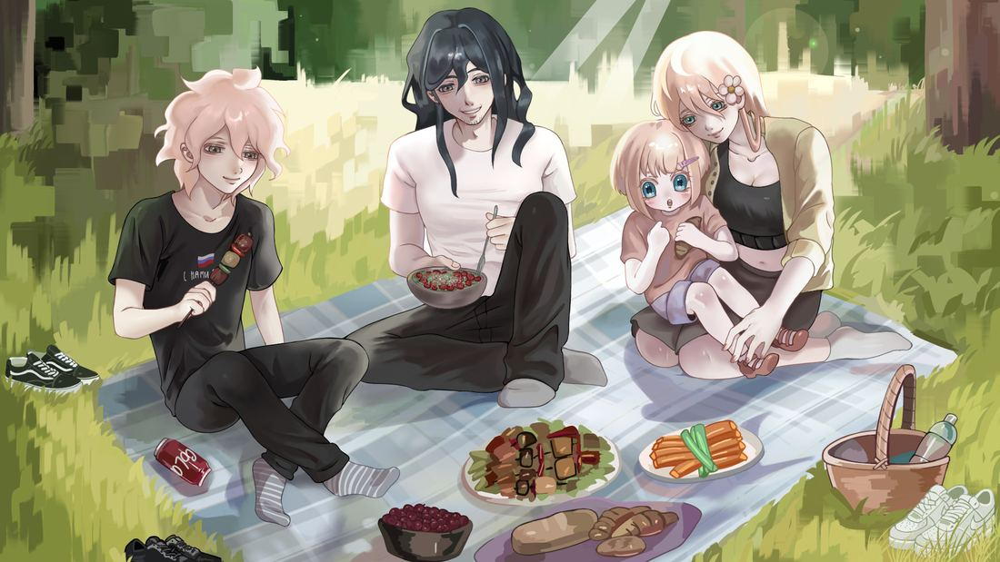
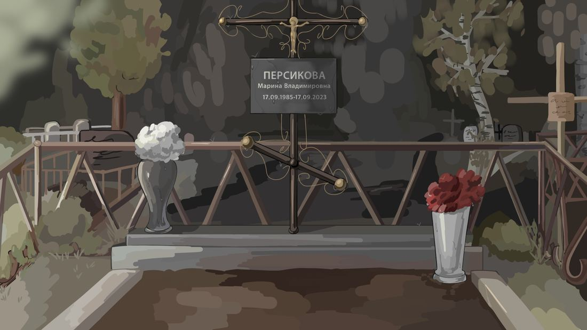
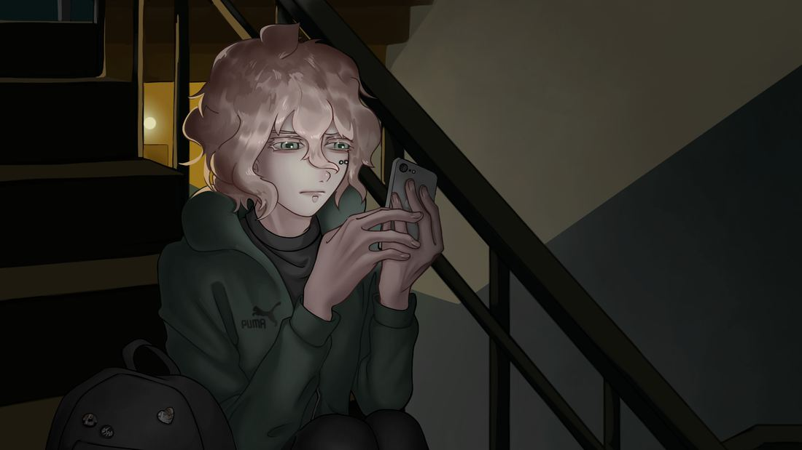
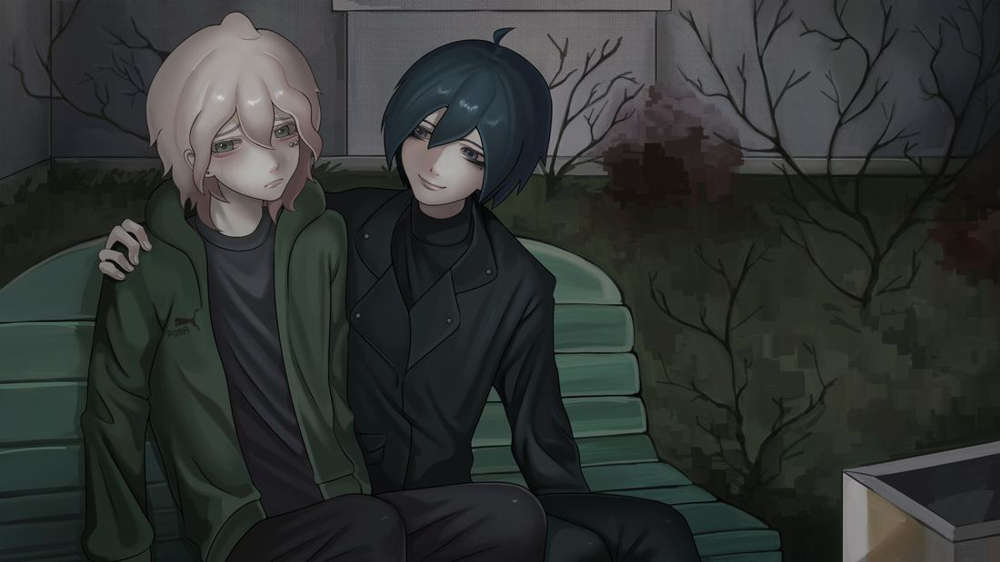

Я думал, она никогда не умрёт, а если и умрёт, я буду готов.
My Fault Is
Your Salvation
Моя вина — твоё спасение
Обычная жизнь Севы похоронена. Взамен — криминальный мир, где безопасность покупается кровью. Шагнув во тьму ради любимого человека, он стал тем, кого раньше боялся.
Теперь его ведут тени прошлого. Но тьма редко отпускает своих жертв. И в её глубинах всегда есть кто-то пострашнее.
Дневник Севы
Пап, ты ведь помнишь, какой была мама?
Как мы собирались все вместе за стол?
Я иногда просыпаюсь с желанием
услышать, как будто ничего не прошло.
Я обещал, что тебя не оставлю,
пускай за обещание нечем платить.
Я всё, что осталось, на это поставлю,
мне просто нельзя тебя не спасти.
Атмосфера

Последнее лето
Плед, вишня, смех и ощущение, что так будет всегда. Они ещё не знают, что это лето — последнее.

...

Некуда идти
Сева поругался с отцом и не знал, куда идти. Экран загорелся: кто-то написал, что заберёт его.

Тот, кто рядом
Тёплая рука на плече ровно тогда, когда тяжелее всего. Просто совпадение, наверное.